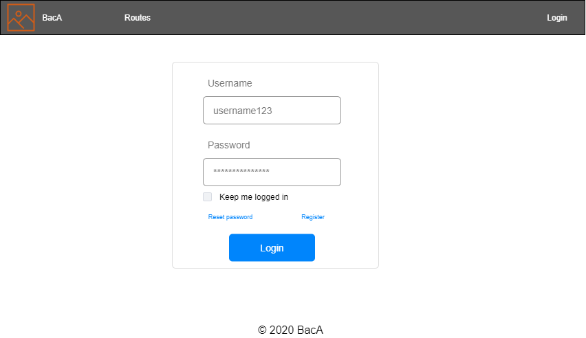
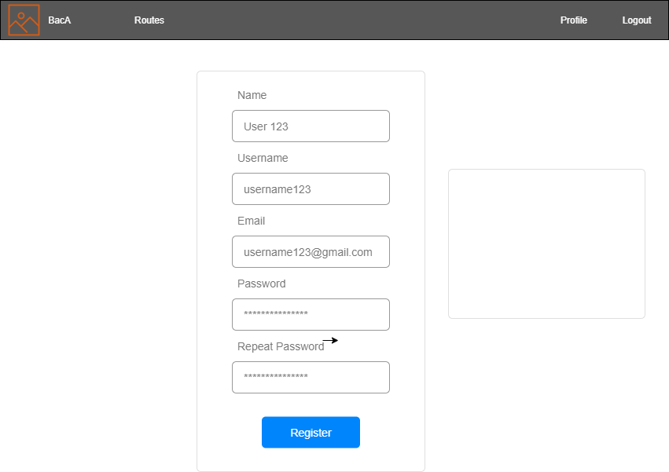
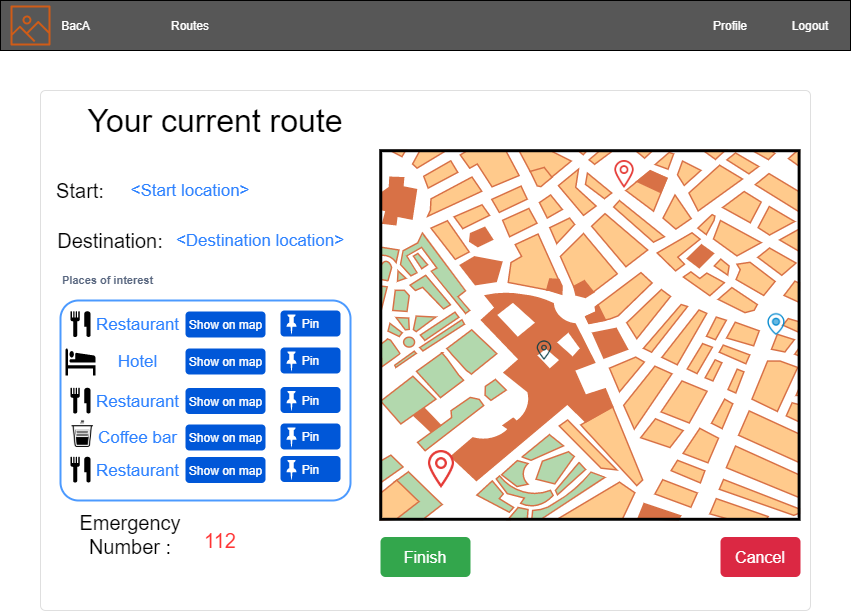
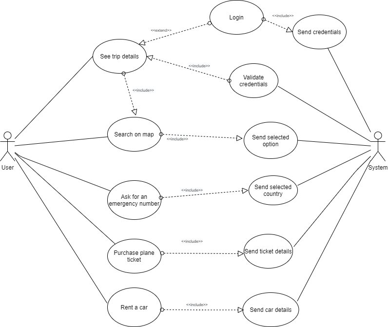
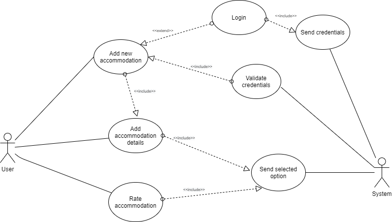

BacA (Backpacker Web Assistant) is an application that allows hikers to choose a route to explore a foreign country while also offering the opportunity to find out nearest shops, hospitals, hotels.
With BacA, the users can see different touristic points of interest like coffee shops, restaurants, museums, shops, hospitals, and so much more, close to the hiking routes that the users will choose to go on. If they want, they can make a budget for the trip for an easier way to find the perfect place to visit. For example, if they are backpackers, they can find the cheapest restaurants or places to eat, but if they are simple travelers, that want to know better the culture of the country or region that they are visiting, they will be able to find the best points of interest to fulfill their wishes, like museums or traditional restaurants.
The users will have the possibility to add the points of interest to their route, making them visible on the map. At the same time, they will get information about how they will have the possibility to contact the authorities if they need help by showing them the emergency number, based on the geographic zone that they will travel through. The user will also have the possibility to save the routes for later use or future use for a newly planned trip.
In this chapter we are going to give some details about the technologie we will use on the frontend and backend side, but also about the public API's we found useful for our application.
In order to develop the user interface we chose to use Angular framework because it will help us build maintainable and easy to use components. Also, we will integrate Angular Material, a library which contains pre-build styled components, in order to have UI consistency between pages.
For the installation of the packages and also to run and test the app we will use the npm package manager from Node.js.
Apart from that we used a series of additional packages that helped us in the development of various key functionalities:
Angular Material
This is a an official component library build by Angular and Typescript. It contains pre-build components which can be styled using pre-defined properties. This library also follows the best UI practicies like adding new features promptly from command line templates. Some of the available components we will use from here are: navigation bar, button, input, card, menu.
Angular Google Maps
The Angular Google Maps library provides services and directives for implementing Google Maps services. There are directives available for creating maps, using markers and many others. It also provides an async function that is useful for checking if the Google Maps library is loaded on the webpage.
ngx-charts
This library is used for data visualization and can handle various forms of customizations while rendering. In ngx-charts their charts rely mostly on using Angular to animate SVGs, which offers more speed and flexibility as this library was optimized for use in Angular.
For the backend part we plan to develop a REST API that would provide data in json format to the client. In order to achieve this we will use Java as the main programming language. On top of this it comes the Spring Boot framework, a very popular Java-based framework for building web applications.
For the data persistence layer we will use MySQL, an open-source relational database management system.
Other dependencies used are:
Maven
The most popular build and dependency management for Java, Maven will help us manage all the dependencies of our project. It will help us easily add jars and other dependencies to the project, and update them rapidly when needed.
Jackson
Jackson is a very populare and efficient java based library, used to serialize or map java objects to JSON and vice versa. It provides a high level facade to simplify commonly used use cases and also provides default mapping for most of the objects to be serialized.
In this subchaper we will describe which APIs we decided to include in our application and what are their use for it.
Fantastic Stay API
This API will give us informations about where the user stayed during his trip, if the reservation was done properly and also will allow the user to write reviews for a specific accomodation and to see how much he spent there.
Trimble Trip API
Another API we found useful was the Trimble Trip API which provides us with the tools to build routing, scheduling and navigation features in our applications. With its help we will be able to calculate the trip costs, to search for the user's location and to update it accuretly on the map. Also, it offers and a trip management solution for the users who like to travel by car.
Allmyles API
This API will give us informations about the bookings for a specific user, flights he planed, hotels where he reserved any rooms and will also provide us the nearest airport or the location of the hotel.
Maps Javascript API
This API will provide us with a way to customize maps with our own content and imagery, allowing us to display the maps on web pages and mobile devices. The Maps Javascript API features four basic map types(roadmap, satellite, hybrid and terrain) which can be modified using layers and styles, controls and events, and various services and libraries.
As we can see, the architecture of the application is implemented based on the following elements : Client (Web browser and mobile browser), Angular frontend application, Appi, Java with Spring Boot backend and MySQL database.
The communication between this services is shown below:
The application can be accessed through web browser or mobile browser. The user can get in contact with the frontend part that we will be doing in Angular frontend application.
Through Angular frontend application some of the public API will be accesed: Fantastic stay API, Maps Javascript API, Trimble Trip API and Allmyles API. With the help of API we can find details like where is a person accomodated, located, the shops and hospitals around or a police station that he or she can go to. Also, the frontend application will communicate with the backend through some API made by us.
We wil use some public API like Fantastic stay API, Maps Javascript API, Trimble Trip API and Allmyles API to determine
The backend part it will be made in Java with Spring Boot as a framework.
In MySQL the database will be created. The backend will communicate with tha database through MySQL.
In this chapter, we are going to give some details about the pages that the user will interact with.
On the login page, the user can be authenticated into the application. The user has two more options: the case in which he is not registered, he can register, and if he forgets his authentication details, in this case, the password, he can request his password to be reset. The two fields required for the login are the username and the password. 
On the register page, new users can create new accounts. The fields required for this process will be the username, password, email, and name.
On the trip details page, the user can see details about the trip he will go into, like the starting point, the destination, and the points of interest suggested by the application. He can show them on the map or pin them permanently for going there during the travel through his route. On the other side of the page, a map will show the user the route with all the modifications. Also, he will see the emergency number of the country or region where he will trip. 
Use case for user login
The login into our application can be described by the following steps:
Use case for Trip
The operation logic for this use case can be described by the following steps:
Use case for TripDetails

This use case can be described by the following steps:
Use case for Accommodation

In this case we have the following steps: